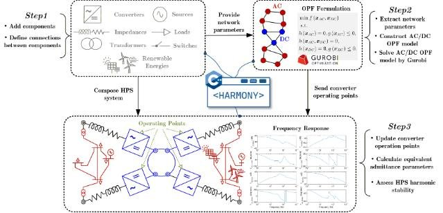

Current · Horizon Europe
InterOPERA
Multi-vendor multi-terminal HVDC interoperability and grid-forming capability.
interopera.eu ↗TU Delft · IEPG · ESE
Research on interoperable multi-vendor HVDC grids, converter control, protection, and open tools for hybrid AC/DC systems.
Research focus
Led by Assoc. Prof. Aleksandra Lekić. Circuit theory, nonlinear control, harmonic stability, and real-time validation for multi-terminal HVDC systems.

Projects
Each project links to its official consortium website where available.
Multi-vendor multi-terminal HVDC interoperability and grid-forming capability.
interopera.eu ↗Openness across control, protection, governance, and IP for PE-dominated grids.
inter-open.eu ↗Open-source tools to detect and mitigate harmonics and converter-driven instabilities.
mitigate-harm.eu ↗Mathematical framework for harmonic stability assessment of PE-based systems.
cresym.eu/harmony ↗DC protection, security, control and optimisation for hybrid AC/DC grids.
prosecco-project.be ↗Smart microsecond-scale adaptive MPC for PE-based HVDC grids.
TU Delft page ↗Team
Profiles will expand from your website forms — sample of the current group.
Newsfeed
2026
Consortium partners met at TU Delft to launch open-source harmonic mitigation research.
2025
Two-day workshop reported in 4TU news.
Open course with accompanying GitHub model libraries.
Open source & portfolio
Software, hierarchical C&P, RTDS libraries, and planned hardware (PACS, DCGC, DCSS) from the Interoperability Program business case.